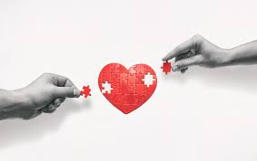
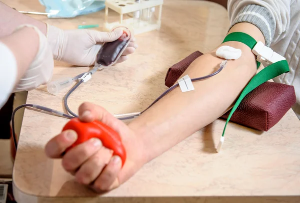
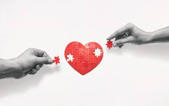
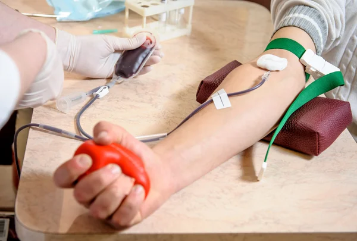
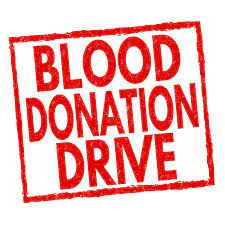
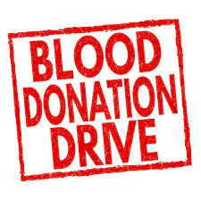

Donors give about a pint of whole blood, which is then separated into its components (red cells, plasma, platelets, and white cells).
 Plasma Donation
Plasma Donation
Only the plasma portion of the blood is collected, which is used for patients with clotting disorders.
Platelets are collected, often used for cancer patients or those with blood disorders.
Red blood cells are collected, which are crucial for patients with anemia or trauma.
Donors typically must be at least 17 years old (16 with parental consent in some areas), weigh at least 110 pounds, and be in good health.
Certain medical conditions, recent travel, or lifestyle factors might affect eligibility. It’s best to check with local blood banks for specific criteria.
 Registration
Registration
Donors provide personal and medical information.
A brief health assessment is conducted to ensure it’s safe to donate.
Blood is collected through a needle inserted into a vein, usually in the arm. The process takes about 8-10 minutes.
 Recovery
Recovery
Donors are monitored for a short period after donation and are encouraged to rest and hydrate.
Can be donated every 56 days.
Can be donated every 7 days, up to 24 times a year.
Can be donated more frequently, depending on local guidelines.
Blood donation is a safe process with minimal risks. Equipment is sterile and used only once to prevent infections.
People may experience slight dizziness or fatigue, but these are usually temporary.
 Impact
Impact
A single donation can potentially save up to three lives, as the collected blood can be separated into different components to treat various conditions.
Blood donation is a vital way to contribute to the well-being of others, and many communities rely on the generosity of donors to maintain an adequate supply of blood for those in need.
 




 
